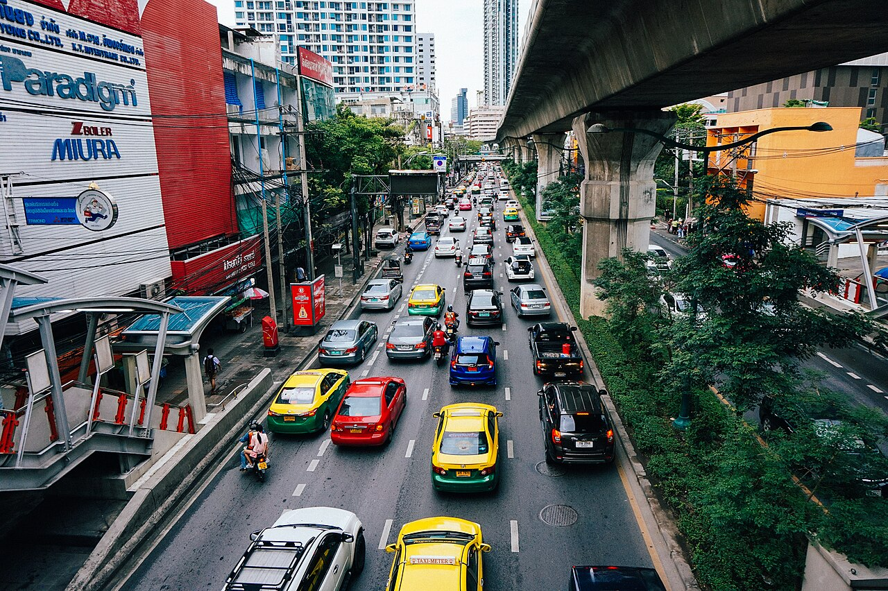
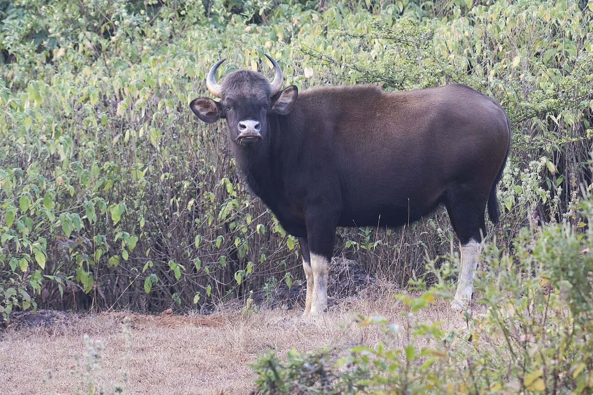
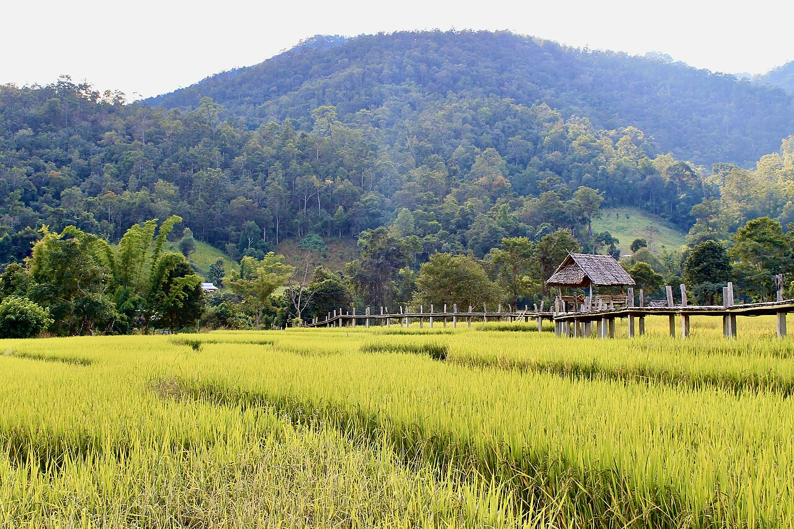
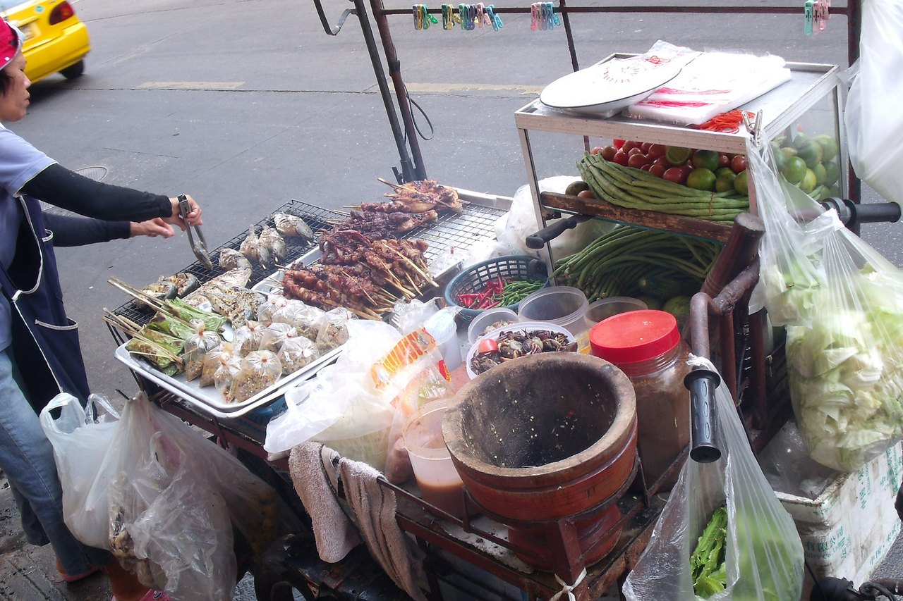
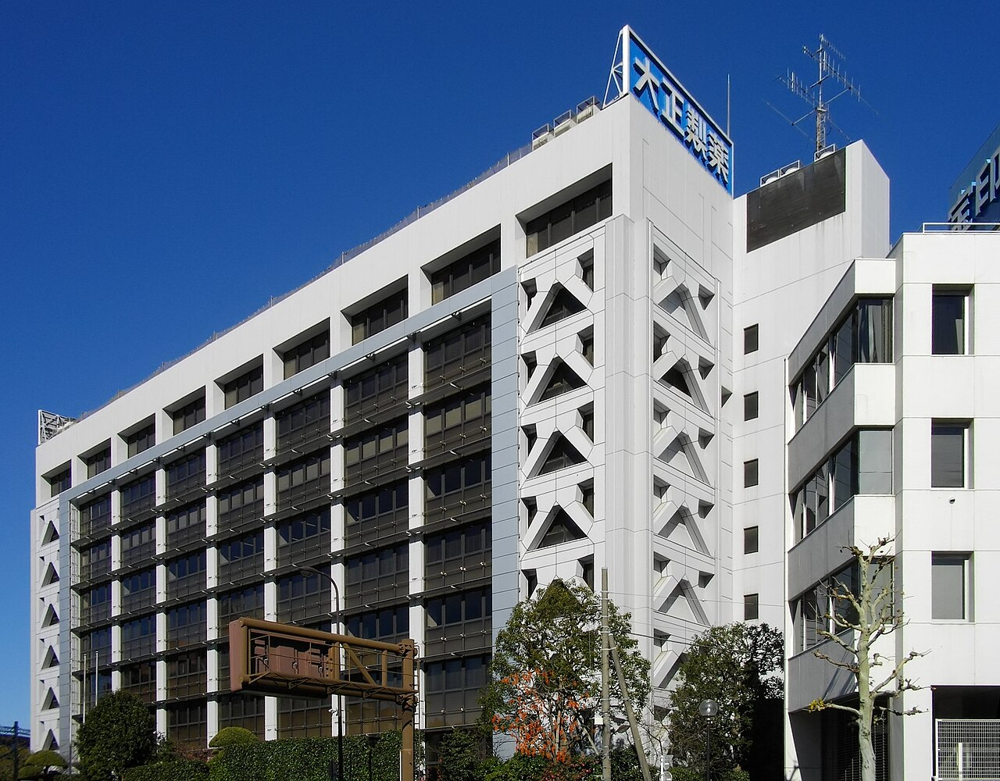
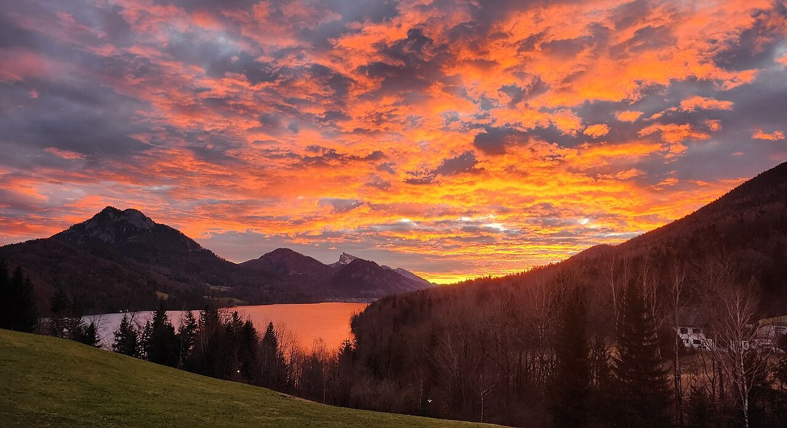
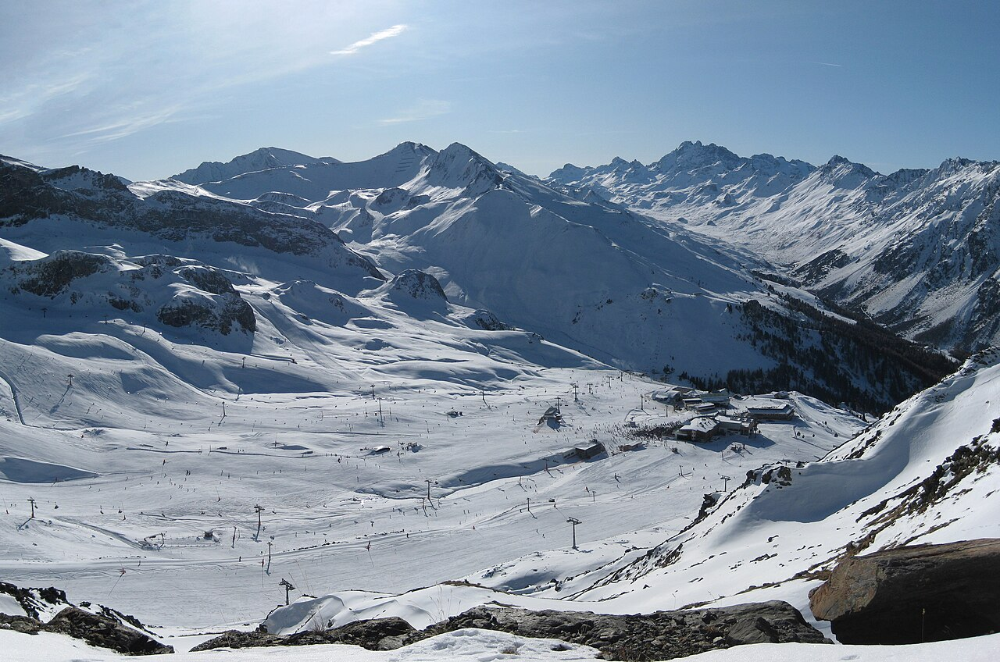
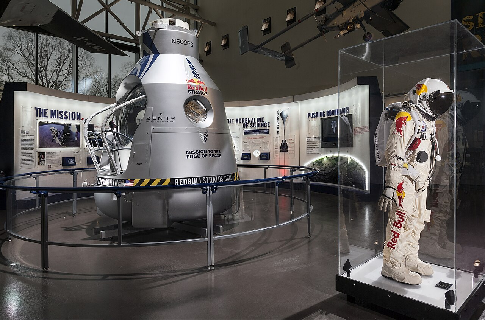

タイの首都バンコク、1980年代のはじめ。ドイツの化粧品会社で歯みがきなどの宣伝を担当していたオーストリア人、ディートリッヒ・マテシッツは、空港から街へ向かう途中で小さな瓶の飲み物を買いました。「1杯で時差ぼけが消えた」と、のちに振り返っています。
その飲み物の名前は「クラティンデーン」。タイ語で「赤い牛」を意味します。いまや世界中で売られるレッドブルは、この飲み物から生まれました。タイの小瓶は、どうやってオーストリアの缶になったのでしょうか。

世界中で売られる青と銀の缶。そのもとは、タイで1976年に生まれた小瓶の栄養ドリンクでした。日本・タイ・オーストリアをつなぐ地図と、3本の飲み物のくらべで、赤い牛がたどった道を追ってみませんか。
タイの首都バンコク、1980年代のはじめ。ドイツの化粧品会社で歯みがきなどの宣伝を担当していたオーストリア人、ディートリッヒ・マテシッツは、空港から街へ向かう途中で小さな瓶の飲み物を買いました。「1杯で時差ぼけが消えた」と、のちに振り返っています。
その飲み物の名前は「クラティンデーン」。タイ語で「赤い牛」を意味します。いまや世界中で売られるレッドブルは、この飲み物から生まれました。タイの小瓶は、どうやってオーストリアの缶になったのでしょうか。
本当です。レッドブルのもとは、タイの栄養ドリンククラティンデーンです。1984年、タイの作り手とオーストリアの宣伝の専門家が会社をつくり、炭酸を加えるなど欧米の人の好みに合わせて作り変え、1987年に売り出しました。さらにさかのぼると、日本のリポビタンDにも行き着くといわれます。
クラティンデーンを作ったのは、タイ北部の中国系の貧しい家に生まれたチャリアオ・ユーウィッタヤーです。生まれた年は1923年とする資料もありますが、1922〜1932年と幅があり、はっきりしません。1960年代の初めに、小さな製薬会社を始めました。
1976年、この会社が売り出したのが栄養ドリンクのクラティンデーンです。「クラティン」はガウルという大きな野生の牛、「デーン」は赤。ラベルには、太陽を背に2頭の赤いガウルが角を突き合わせる絵が描かれています。


最初のお客は、地方で体を使って働く人たちでした。チャリアオは都会より地方の売り場に力を入れ、農村の労働者が疲れたときに飲む「元気の出る1本」として売り込みました。カフェイン（コーヒーにも入っている、眠気をさます成分）と砂糖が入った、甘い飲み物です。

クラティンデーンより14年早い1962年、日本では大正製薬がリポビタンDを売り出していました。茶色い小瓶に入った栄養ドリンクで、中心の成分はタウリン（アミノ酸に近い成分）。いまの商品は、1本100mLに1,000mgのタウリンを含みます。
まず、マテシッツの側の話です。1980年代、彼はリポビタンDを作る大正製薬が日本でとても多くの税金を納める会社だという記事を読み、栄養ドリンクの商売の大きさに目をつけた、と伝えられています。
日本語版 Wikipedia によると、マテシッツは2007年と2012年の日本の雑誌の取材で、リポビタンDから大きな影響を受けたと語っています。ただし、雑誌の原文までは編集部で確かめられていません。

タイの側にも、日本の小瓶は先に届いていました。リポビタンDは1965年からタイに輸入され、1969年にはタイの会社オソサファが、大正製薬の許しを得て現地で作りはじめます。クラティンデーンが生まれたとき、タイにはもう小瓶の栄養ドリンクが売られる下地がありました。
クラティンデーンは、リポビタンDをお手本に、タイの人の好みに合わせて甘くしたもの──香港の英字紙サウス・チャイナ・モーニング・ポストは2018年、そう伝えています。ただ、チャリアオ本人がそう語った記録は見当たらず、確かなことはわかっていません。
1984年、マテシッツとチャリアオはそれぞれ50万ドルを出し、オーストリアに「レッドブル社」をつくりました。持ち分は2人が49％ずつ。残りの2％はチャリアオの息子チャラームのものです。会社の経営はマテシッツが受け持ちました。
名前はクラティンデーンを英語にした「レッドブル」。中身は、炭酸を加えるなど欧米の人の好みに合わせて作り直しました。もとのクラティンデーンは、炭酸の入っていない飲み物です。味や缶のデザイン、売り方を決めるのに、発売まで3年近くかけています。
図柄は受けつぎました。いまのレッドブルの缶にも、太陽を背に2頭の赤い牛が角を突き合わせる、タイのラベルとほぼ同じ絵が描かれています。
1987年4月1日、レッドブルはオーストリアで発売されました。最初に売り出したのは、国内のスキー場です。安い栄養ドリンクとしてではなく、値段の高い、しゃれた飲み物として売り込みました。
そこからオーストリアの外へ広がるのは、ゆっくりでした。ドイツとイギリスで売られはじめたのは1994年、アメリカは1996年です。


レッドブルは、ふつうのテレビ広告に頼るより、エクストリームスポーツ（危険をともなう派手なスポーツ）のイベントに自分の名前を付けて広めてきました。英語版 Wikipedia は、そうしたイベントで名前を知らせ、ブランドの「伝説」を作ってきたと説明しています。
たとえば、1992年にウィーンで始めた「フルークターク」は、手作りの“飛行機”で高さ約9mの台から水に飛びこむ大会です。これまでに35をこえる都市で開かれてきました。
2012年10月14日には、アメリカ・ニューメキシコ州の上空約39km、成層圏（雲よりずっと上の空）から、男性が気球につるしたカプセルを出て飛び降りる「レッドブル・ストラトス」を中継しました。YouTube で同時に見た人は950万人をこえ、当時の記録になりました。

会社は「1987年の発売で、エナジードリンクという種類の飲み物を生んだ」と説明します。けれども、ここまで見てきたように、タイにも日本にも先輩がいました。
2人の創業者は、もういません。チャリアオは2012年に、マテシッツは2022年に亡くなりました。タイ側の持ち分は、チャリアオの49％と息子の2％を合わせて51％。この51％は、いまもユーウィッタヤー家が持っています。入口はオーストリアでも、持ち主の過半は、いまもタイの一族なのです。
タイのクラティンデーン（1976年）から、オーストリアのレッドブル（1987年）が売り出されるまで英語版 Wikipedia による
オーストリアでの発売（1987年）から、ドイツとイギリスで売られはじめる（1994年）まで英語版 Wikipedia による
2025年に世界で売れたレッドブルの缶の数。1日あたり約3,800万本になる2025年。レッドブル社の発表による
レッドブルが日本にやってきたのは2005年12月。最初はクラブやバーに置かれ、2006年4月からコンビニでも売られるようになりました。
ところが日本の缶の成分を見ると、クラティンデーンや海外のレッドブルに入っているタウリンが見当たりません。かわりに並ぶのは、アルギニンというアミノ酸です。
タウリンは、厚生労働省のリストで「専ら医薬品として使用される成分」とされています。そのため、食品にはタウリンを原材料として加えられません。レッドブル社は、日本の缶に入れていない理由を公表していません。
リポビタンDに入れられるのは、医薬部外品という、薬に近い扱いの商品だからです。
日本の小瓶をお手本にしたともいわれる赤い牛は、世界をひと回りして日本に帰ってきたとき、お手本の主役だった成分を置いてきたのです。
次にコンビニでレッドブルとリポビタンDが並んでいたら、缶と瓶の裏の成分表を見くらべてみてください。